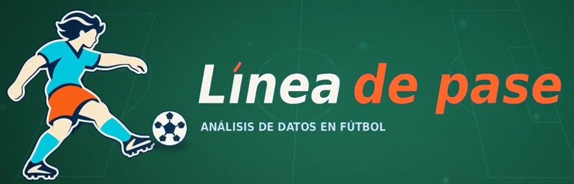

MESA DE REDACCIÓN · BORRADOR
De dos jornadas a una publicación
Prepara una ficha descriptiva con los marcadores, la cobertura y los enlaces a las fuentes. Añade tu pregunta y tu lectura antes de descargar. No se publica ni se guarda automáticamente.

Del campo al dato.Mi pasaporte ↗06 / STUDIO
Crea piezas con los generadores existentes. Revisa el corte y las fuentes antes de compartir.
Las métricas se muestran solo cuando ambas fichas están completas. El taller permite exportar SVG, PNG o WebP.
Crear un mapa de temporadaMESA DE REDACCIÓN · BORRADOR
Prepara una ficha descriptiva con los marcadores, la cobertura y los enlaces a las fuentes. Añade tu pregunta y tu lectura antes de descargar. No se publica ni se guarda automáticamente.
SVG, PNG, WebP, carruseles y formatos sociales con datos de jornada.
Abrir experienciaPrepara imagen y texto por canal.
Abrir experienciaDescompón y explica una secuencia.
Abrir experienciaEncuentra una pieza y consulta su contexto.
Abrir experiencia